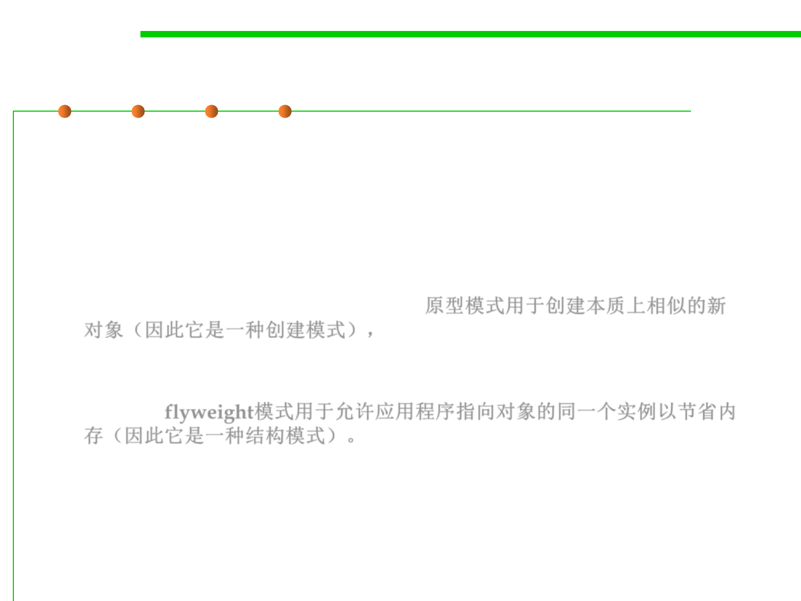

8.3 Code Tuning for Performance Optimization
prototype pattern vs. flyweight pattern
▪ Similarities
– Both of them uses a manager to store and retrieve the objects in the
collection.
▪ Differences
– The prototype pattern is used to create new objects that are similar in
nature (hence it‘s a creational pattern),原型模式用于创建本质上相似的新
对象（因此它是一种创建模式），
– while the flyweight pattern is used to allow the application to point to the
same instance of the object to save memory (hence it's a structural
pattern). flyweight模式用于允许应用程序指向对象的同一个实例以节省内
存（因此它是一种结构模式）。